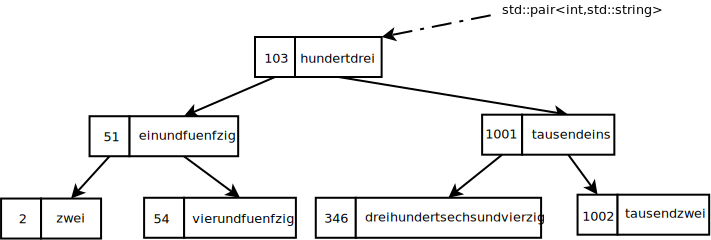

std::map¶
Basics¶
Implementation of a key to value mapping
Internally realized as a red-black tree
Template type, parameterized as
std::map<keytype, valuetype>std::map<int, std::string> some_map;
Tree nodes are pairs
(key, value)
{kind=link}
Type Instantiation¶
Type of a map is, e.g.
std::map<int, std::string>⟶ Compiler instantiates red-black tree implementation of the mapping
Key and value types not limited to built-in type, naturally
Type has member types (used when operating on object of the map type)
key_type: the keymapped_type: the value that the key maps tovalue_type: the node type that the red-black tree has (std::pair<int, std::string>)…
⟶ later
Filling The Container¶
Default constructor ⟶ empty container, obviously
Pre C++11, containers can only be initialized as being empty
To be filled explicitly during runtime
Since C++11: Brace Initialization (Uniform Initialization)
Type definition with
usingis strongly recommended when working with maps
Inserting Elements¶
Many ways to bring elements into the container, varying in their key-collision semantics, and many other facets …
Subscript operator (
[]):my_map[42] = "zweiundvierzig";. Overwrites keys that are already there.insert(). Does not overwrite; return value has an indicator if element was inserted.emplace(). Likeinsert(), but rather constructs element in-place. (Performance!)
Removing Elements¶
Many overloads …
erase(iterator): if one has a pointer to the element (for some reason)erase(begin-iterator, end-iterator): same rationaleerase(key)
Searching¶
find(key)if found, returns a pointer (err, iterator) to tree node (
(key, value))otherwise, returns
map.end()⟶ requires an
ifstatement to check
operator[]()is unusable in most casesMainly there for insertion
For technical reasons, can also be used to search
Creates new entry if key not found
at(key)Like
[key]ifkeyis foundThrows
std::out_of_rangeotherwise